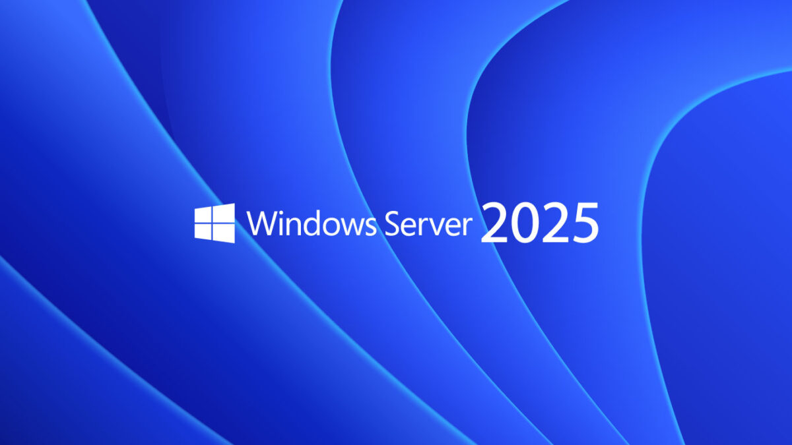

Descrição
Implementação completa de infraestrutura Windows Server 2025 com serviços empresariais para ambiente corporativo.
Active Directory Domain Services
- Gestão centralizada de usuários, grupos e computadores
- Políticas de Grupo (GPO) para padronização de ambientes
- Autenticação integrada com Single Sign-On
- Replicação multi-master entre controladores de domínio
- LDAP para serviços de diretório
Serviços de Rede
- DNS Server: Resolução de nomes interno e externo
- DHCP Server: Alocação automática de endereços IP
- File Services: Compartilhamentos SMB com permissões NTFS
- Print Services: Gerenciamento centralizado de impressão
- Remote Desktop Services: Acesso remoto a desktops e aplicações
Virtualização com Hyper-V
- Host de virtualização para máquinas Windows e Linux
- Live Migration entre hosts físicos
- Replicação de VMs para disaster recovery
- Virtual Fibre Channel e SR-IOV para alta performance
- Shielded VMs com criptografia completa
Segurança e Compliance
- Windows Defender ATP integrado
- BitLocker para criptografia de volumes
- Audit Logging e SIEM integration
- Just Enough Administration (JEA)
- Credential Guard e Device Guard
Windows Server 2025 Datacenter
Active Directory
DNS/DHCP
Hyper-V
Group Policy
PowerShell
Failover Cluster
Documentação
Imagens e capturas de tela da implementação do Windows Server 2025:

Tela de Bloqueio
Interface moderna de gerenciamento do servidor
Interface moderna de gerenciamento do servidor

Acesso Remoto
Gerenciamento de Acessos
Gerenciamento de Acessos

Hyper-V Manager
Console de gerenciamento de máquinas virtuais
Console de gerenciamento de máquinas virtuais
Recursos Técnicos do Projeto
- Sistema Operacional: Windows Server 2025 Datacenter
- Funções Instaladas: AD DS, DNS, DHCP, Hyper-V, File Services
- Hardware: 8GB RAM, 4x CPU R5 3600, 128GB NVME Storage
- Rede: 1Gbps e VLAN
- Segurança: BitLocker, Windows Defender, TPM 2.0
- Backup: Windows Server Backup + Veeam Agent
- Monitoramento: Windows Admin Center + Prometheus
Windows Server 2025
Active Directory
Hyper-V
DNS/DHCP
Failover Cluster
Group Policy
PowerShell
Configurações de Serviços
- Domain: corp.local (Floresta e Domínio únicos)
- DNS: Forwarders para 8.8.8.8 e 1.1.1.1
- DHCP: Scope 192.168.1.100-200 /24
- GPOs: Password Policy, Desktop Lockdown, Drive Mapping
- Hyper-V: Generation 2 VMs, Dynamic Memory, Checkpoints
- Storage: NTFS ReFS Volumes, Deduplication Enabled
- Backup: Incremental diário + Full semanal
corp.local
192.168.1.0/24
GPO Policies
ReFS
NTFS
TPM 2.0
BitLocker